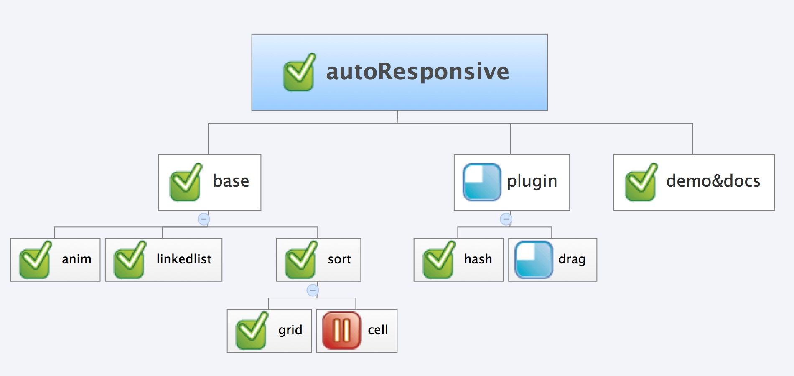

Introduction
- 支持条件排序、随机排序
- 支持特定条件的过滤排序
- 支持css3特效
- 兼容kissy瀑布流组件
- 支持自定义配置
- 支持用户自定义特效
- 排序元素支持复杂dom结构
- 支持自定义展示方向
- 支持拖拽功能
- hash路由回溯定位
compatibility
- IE6～IE10
- Firefox
- Chrome,Safari
- Opera
- Android 2.3及以上浏览器
- 移动版Safari
- 国产：移动版遨游,QQ
- 注意：移动版Opera,UC不支持
Log
- v1.0_2013.3.5_beta
新增拖拽功能整合kissy瀑布流针对IE低版本浏览器优化动画算法
- v1.1_2013.7.6_stable
新增loader功能，不再使用kissy waterfall针对IE的大量性能优化
- v1.2_2013.7.24
- v1.3_2013.9.1
支持横屏瀑布流新增拖拽插件新增sort排序插件，支持更广泛的排序规则
- v2.0
- 注意:
repository
https://github.com/xudafeng/autoResponsive.git
todo
- 1 重构drag模块 @达峰
- 2 链表排序算法优化 @达峰
